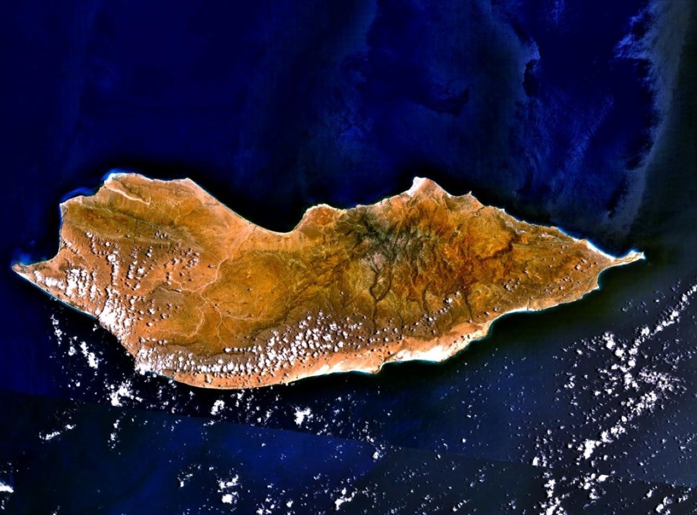
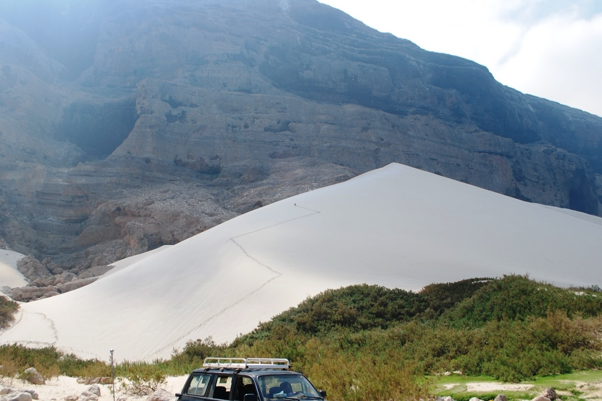
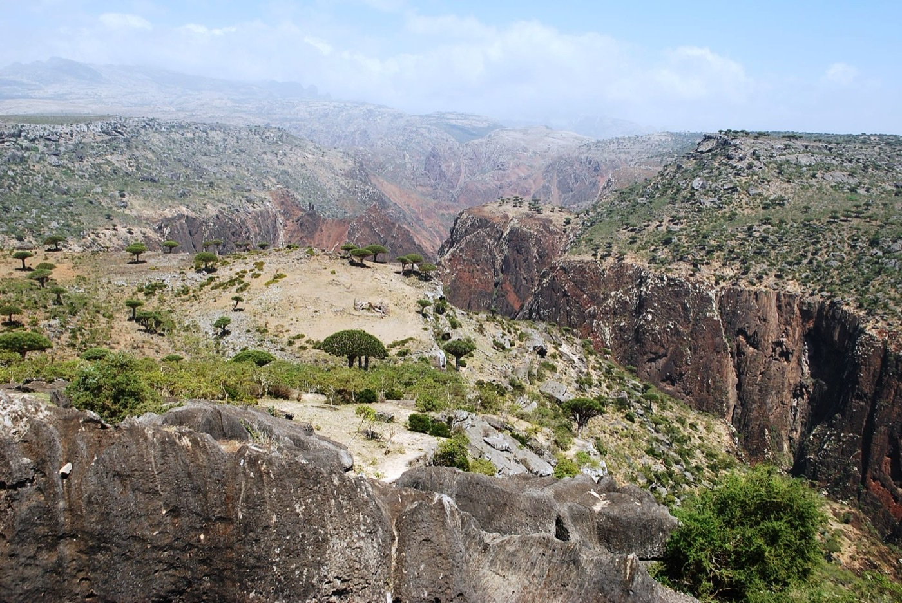

The Gondwana Microcontinent: Tectonic Drift & Karst Speleology Mikro-Benua Gondwana: Robekan Tektonik & Speleologi Karst
Unlike volcanic ocean archipelagos such as the Galápagos or Hawaii, Socotra is a genuine fractured fragment of the ancient Gondwana supercontinent. It preserves a crystalline Precambrian granite core blanketed by thick Cretaceous limestone strata, hollowed by immense prehistoric caves, and shaped by monsoon gales. Berbeda dari kepulauan samudra vulkanis seperti Galápagos atau Hawaii, Socotra adalah pecahan asli dari superbenua purba Gondwana. Pulau ini memiliki inti batuan granit kristalin Prakambrium yang diselimuti lapisan tebal batugamping Kapur, berongga gua prasejarah raksasa, dan terpaan angin muson ekstrem.
The Opening of the Gulf of Aden Terbukanya Teluk Aden & Isolasi 20 Juta Tahun

NASA Landsat • 3,796 km²Socotra Continental Fragment in the Arabian Sea
Gondwana Supercontinent Breakup
Socotra was situated deep in the interior of Gondwana, contiguous with the Horn of Africa (Somalia) and the Dhofar region of the southern Arabian Peninsula. Socotra awalnya terletak jauh di bagian dalam superbenua Gondwana, menyatu erat dengan Tanduk Afrika (Somalia) dan pesisir selatan Semenanjung Arab (Dhofar).
Afar Plume & Gulf of Aden Rifting
Thermal upwelling from the Afar mantle plume initiated seafloor spreading. The Arabian plate detached from the African plate, opening the Gulf of Aden and stranding Socotra as an isolated microcontinental horst block. Aktivitas mantel bumi plume Afar memicu pemekaran dasar samudra. Lempeng Arab terpisah dari Lempeng Afrika, membuka Teluk Aden dan meninggalkan Socotra terisolasi sebagai blok benua mandiri.
Submersion & Uplift of Karstic Plateaus
Tectonic uplift pushed ancient marine limestone shelves above sea level to form the Dixam and Homhil plateaus, while granitic plutons pierced upward to form the jagged Haggeher pinnacles. Pengangkatan tektonik mendorong paparan batugamping purba ke atas permukaan laut membentuk dataran tinggi Dixam dan Homhil, sementara intrusi granit menembus ke atas membentuk menara tajam Haggeher.
Hoq Cave: The 3-Kilometer Subterranean Sanctuary Gua Hoq: Suaka Bawah Tanah Sepanjang 3 Kilometer
Carved into the towering limestone cliffs of northeastern Socotra, Hoq Cave (Ghar Hoq) extends over 3,000 meters into subterranean darkness. Its vast galleries feature colossal stalactites, underground calcite pools, and a constant year-round microclimate that preserved one of the world's most astonishing archaeological discoveries: Terbentuk di dalam tebing batu kapur timur laut Socotra, Gua Hoq menembus kegelapan bawah tanah sejauh lebih dari 3.000 meter. Lorong-lorong megahnya dihiasi stalaktit raksasa, kolam kalsit bawah tanah, dan iklim mikro stabil yang mengawetkan salah satu penemuan arkeologis maritim terpenting dunia:
Multilingual Sailor Inscriptions (1st–6th Century CE) Prasasti Multibahasa Para Pelaut Kuno
In 2001, Belgian speleologists discovered hundreds of charcoal and ink inscriptions left deep inside the cave by ancient mariners waiting out violent monsoons. Texts include Brahmi from India, ancient South Arabian, Palmyrene Aramaic, and Greek, testifying to Socotra’s role as the crossroads of ancient Indian Ocean navigation. Pada tahun 2001, speleolog Belgia menemukan ratusan tulisan arang dan tinta di kedalaman gua yang ditinggalkan oleh para pelaut kuno saat berteduh dari amukan badai muson. Aksara mencakup Brahmi dari India, bahasa Arab Selatan Kuno, Palmyra, dan Yunani.

Hoq Cave Escarpment • Real PhotographThe Monsoon Dynamo: SW Khareef vs. NE Winter Mesin Angin Muson: SW Khareef vs. NE Musim Dingin
Southwest Monsoon (The Khareef) Muson Barat Daya (Khareef)
Violent gales reach constant speeds of 80 to 120 km/h, isolating the archipelago by sea for months. These winds induce massive cold-water upwelling along the southern coast, driving oceanic productivity and creating towering coastal sand dunes. Angin kencang berkecepatan 80 hingga 120 km/jam mengisolasi pulau dari pelayaran laut selama berbulan-bulan. Angin ini memicu upwelling air dingin kaya nutrisi di pesisir selatan dan meniup bukit pasir raksasa ke tebing kapur.
Northeast Monsoon & Winter Mists Muson Timur Laut & Kabut Gunung
Gentle, humid air masses strike the 1,500m peaks of the Haggeher mountains, producing thick cloud blankets and horizontal precipitation that nourishes the highland Dragon Tree groves and perennial wadi springs. Massa udara lembap menghantam lereng pegunungan Haggeher setinggi 1.500 m, membentuk selimut kabut tebal dan embun horizontal yang menghidupi hutan pohon naga serta mata air wadi abadi.

Wadi Dirhur • 400m Karst Gorge